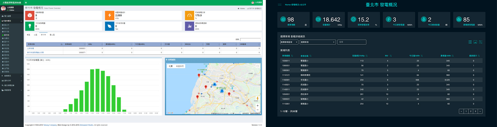
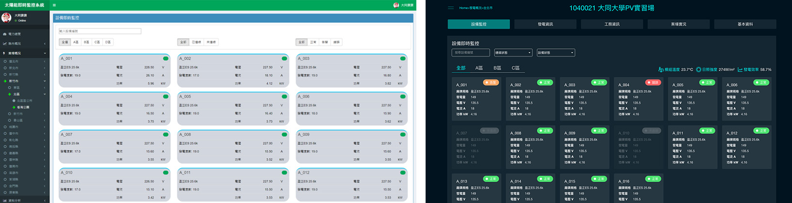
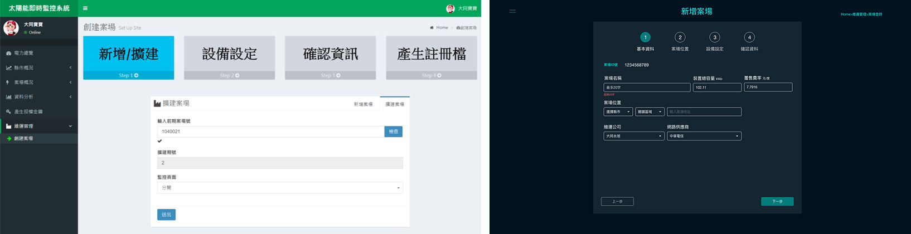
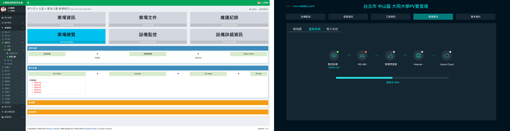

背景
業主他們希望監控後台的操作介面，希望有獨創性及企業風格。在定義及分析系統架構和流程時，除了可改善表層視覺風格外，並可依不同使用者來優化設定流程的操作並將所有資訊再分類依其重要性及層級顯示，提升操作效率！
負責工作
架構及流程、視覺風格設計、網頁前端
製作時間
5個月
架構與流程
以原架構為基礎，調整部份流程上的操作。並加入不同使用者 - 後台人員、維運人員、營管人員的使用情境，並非所有使用者都需要完整的內容，精簡部份畫面，提升介面對使用者的友善度，能更夠更直覺地操作。
**下圖不是最終版本的架構

視覺設計
- 延伸戰情首頁的深色風格，便於使用者能長期觀看，以企業用色-永續藍綠色為基本色。
- 定義視覺系統，模組化設計。
- 將所有資訊依重要性、優先性，列出層級。
- 將安裝或檢測類型的功能，以流程Step by Step呈現，更直觀並符合實際的操作特性。

舊版與新版頁面對照
截取部份頁面說明及重點改善的部份。
左方選單在新版選擇功能即關閉，以每頁的麵包屑提示目前所在功能，減少干擾的元素。
縣市發電狀況：移除圖表-在訪談中圖表多用於報表分析時，列出部份重點數值，提升畫面的簡潔性，。
設備監控：在有限畫面中盡可能呈現更多的設備，並以紅(錯誤)、橘(告警)、綠(正常)、灰(離線)的顏色標示設備狀態，方便維運人員查看快速回報。
創建案場：改良原畫面-以4個步驟(基本資料、案場位置、設備設定、確認資料)來建立新案場。
案場實況/監控系統：凸顯功能可在線上查看系統並遠端更新，Step by Step執行重啟步驟，快速排解問題設備。
設計完成後
這個專案共可拆解成4個小專案，從一開始的戰情首頁→監控後台→客戶展示畫面(2款)→客製客戶展示畫面，除了考慮整體風格外，在從未接觸這個產業，以不同利害關係人去理解操作需求及功能，但可惜部份不能收集設計完成後每階段使用者回饋，再不斷優化操作介面。